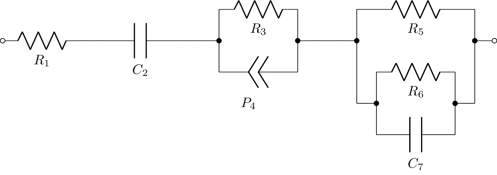

Circuit notation#
AutoEIS uses a custom notation to represent circuit models based on the following two rules:
Elements in series are separate by a
-symbol.Elements in parallel are enclosed in square brackets
[ ], and are separated by a,symbol.
For example, the following circuit:
is represented as R1-C2-[R3,P4]-[R5,[R6,C7]].
As for the component names, AutoEIS uses the following convention:
Rfor resistorsCfor capacitorsLfor inductorsPfor constant phase elements (CPEs)
Resistors, capacitors, and inductors are each parameterized by a single value, which is the component value in Ohms, Farads, and Henrys, respectively. CPEs are parameterized by two values, the magnitude \(Q\) (represented by w) and the exponent \(\alpha\) (represented by n) based on the following equation:
For example, consider component P4 in the above circuit. The corresponding CPE is parameterized by P4w and P4n. The other components are parameterized by R1, C2, R3, R5, R6, and C7 (basically, the parameter name is the same as the component name).